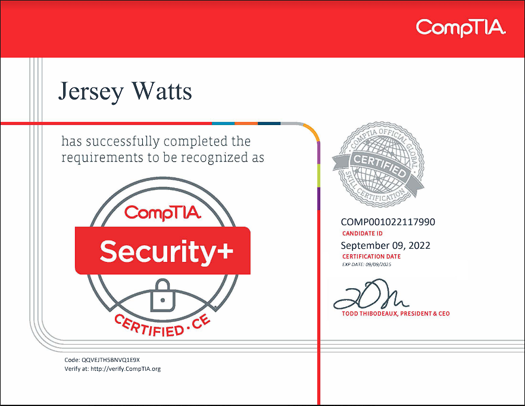

Prolific and diligent worker able to adapt to any tasks necessary. With 1.5 years of IT experience and 4 years of customer service, I am able to give customers and clients the best service possible. Maintains a clean and organized work space to ensure client and coworker satisfaction and safety. Fast and motivated learner with experience with HTML5, JS, CSS, and Python.

Nov 2022 - Present
Jr System Admin — Pelatron Technologies LLC, Hill AFB, Utah
Create tickets (incident and/or work orders) for NIPR and SIPR issues received via telephone, web portal, and/or email and document tickets in detail through the Automated Information System (AIS).
Use Government provided remote-support software tools to access customer end devices to resolve and/or complete customer tickets.
Participate in the development, administration, and maintenance of a knowledge database work management support tool by writing and verifying knowledge articles, as required.
Mar 2020 - Mar 2021
IT Service Personnel — Deep Clean Oki, Okinawa, Japan
Managed administrative server functions, including back-ups, updates, recovery, management of disk space, and more. Located root causes of technical errors and implemented prompt solutions. Member of the research and development team that evaluated and implemented applications. Improved the design of online websites to help increase revenue.
Mar 2021 - May 2022
Barista Shift Lead — Starbucks, Lehi, Utah
Cleaning and sanitizing work areas, utensils, and equipment.
Servicing customers and taking orders.
Counting inventory, pulling inventory, and ordering more inventory when low.
Feb 2019 - Feb 2021
Lifeguard — NAF, Okinawa, Japan
Maintain patron safety.
Ensure the work space is clean and free of hazards.
Taught water safety to individuals.
Managed a team and created scheduling.